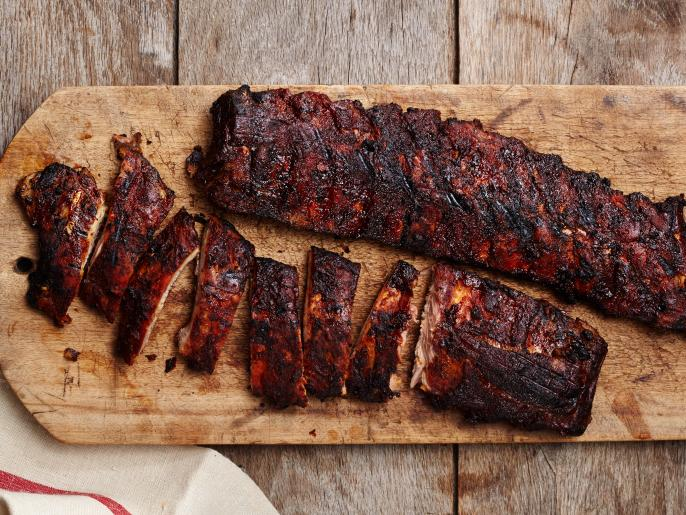

Smoked Pork Ribs

Description
3 2 1 ribs are a fool proof way to get fall off the bone tender ribs. The 3 2 1 rib method is based on smoking ribs at a certain temperature for 3 hours, wrapping with liquid for 2 hours, and saucing for the final 1 hour.
Ingredients
- 1 rack baby back ribs
- 2 tbsp sweet rub
- 1 cup apple cider
- 1/4 cup dark brown sugar
- 2-3 tbsp salted butter
- 1/c cup BBQ sauce
Steps
- Remove membrane on the back of the ribs
- Season both sides of the ribs using the sweet rub
- Set smoker between 180-200 degrees and place ribs on the smoker for 3 hours
- Remove and transfer to aluminum foil. Sprinkle with brown sugar, top with butter, and pour over the apple cider.
- Finishing wrapping in foil and return to smoker at 225 degrees for 2 hours.
- Remove from smoker, unwrap, and place back onto the smoker
- Brush the ribs with your favorite sauce and cook for an additional hour until ribs are done to your desired tenderness.